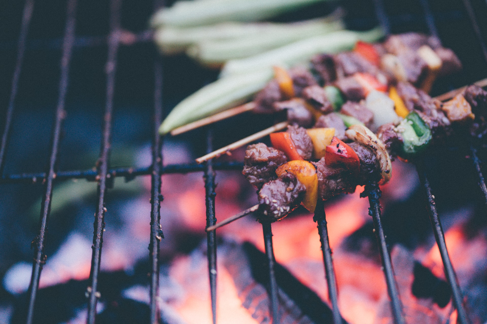
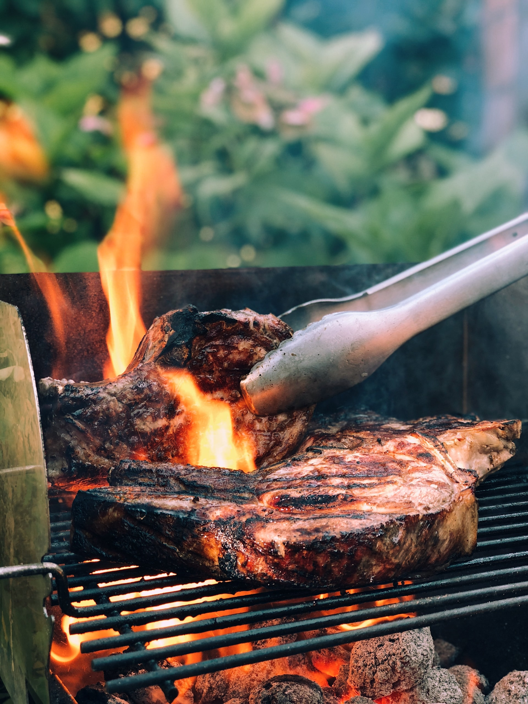

Schweinfleisch:Was ist wichtig?
Schweinefleisch zu grillen ist fast bei jedem Grillchef üblich. Das Fleisch ist im Gegensatz zu dem Rindfleisch günstiger, weswegen es auch gerne bei einer großen Personenzahl auf dem Grill zum Einsatz gebracht wird. Damit alles auf dem Grill klappen kann, haben wir für Dich einige Informationen zu dem Grillen von Schweinefleisch. Dererste Schritt nach dem Einkauf und dem Würzen oder Marinieren ist den Grill betriebsbereit zu machen. Grillst Du direkt auf dem Grillrost, empfehlen wir Dir diesen mit einem hitzebeständigen Speiseöl einzupinseln. So bleibt das Schweinefleisch nicht auf dem Rost kleben. Das gilt übrigens für alle Grillarten. Wie lange das Schweinefleisch auf dem Rost liegen soll entscheiden Fleischdicke und Cut.   Worauf Du achten solltest ist gerade bei den dicken Cuts die Kerntemperatur. Da rohes Schweinefleisch Trichinen (Fadenwürmer) enthalten kann, empfehlen wir Dir das Schweinefleisch gut durch zu grillen. Legst Du Wert auf einen zarten Roseton, solltest Du das Fleisch bis auf eine Kerntemperatur von 58-59 grillen. Auf Nummer sicher gehst Du ab einer Kerntemperatur von 60°C. Das ist wichtig für Schwangere, da für sie ein Kontakt mit Trichinen gefährlich wäre. Grillen wir für Schwangere, legen wir gerade bei Schweinefleisch und der Kerntemperatur immer noch ein paar Grad drauf. Dieses zur Sicherheit gegen Bakterien und Parasiten! Die Kerntemperatur überprüfen wir mit einem speziellen Grillthermometer.